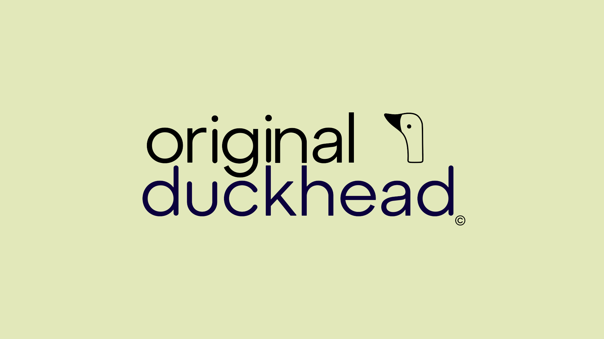

Duckhead Logo Redesign
Visual Communication
51

Overview
Logo redesign for Umbrella brand "Original Duckhead" I noticed there wasn't any icongraphy with their signature duck handle. So I wanted to incorporate it in their logo in order to establish more brand identity and branch out into other accesory lines.
I wanted to challenge myself by making a design that stay cohesive with their already established brand, but take it to the next level.
Their umbrellas have a round feel, especially with the handle. So I wanted to make a design that subtly implied that, as well as have some sort of hint that they make umbrellas. As well as open up their market.
Process Photos


I wanted to reincorporate the "Original" because it seems so integeral to their branding. So I came up with this.